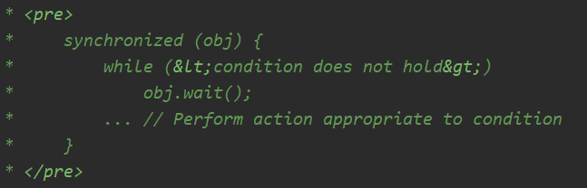
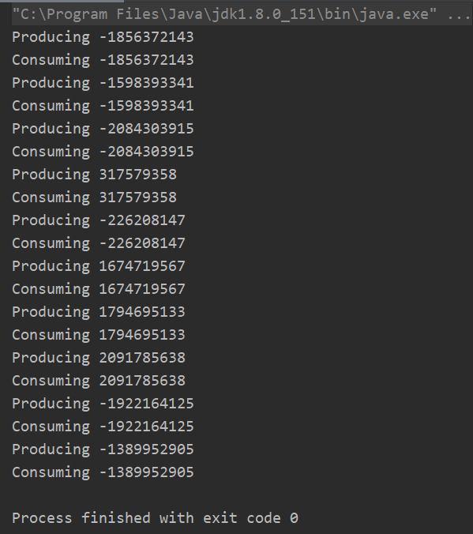

实现生产者消费者(一)：wait() & notify()
- 生产者-消费者模型介绍
生产者和消费者同一时间使用同一存储空间，生产者往空间里放东西，消费者从空间里拿东西
现在要实现的是：生产者生产十个随机数供消费者使用，消费者依次消耗十个随机数，相当于生产者生产一个随机数，就放在盘子里，然后消费者消费。生产者再生产，消费者再消费，直至十个随机数被消耗完，整个过程结束。
- 采用Object.wait() & notify()/notifyAll()方法
wait()表示让该线程等待
notify()/notifyAll()
Wakes up a single thread that is waiting on this object's monitor.
If any threads are waiting on this object, one of them is chosen to be awakened. The choice is arbitrary and occurs at the discretion of the implementation. A thread waits on an object's monitor by calling one of the {@code wait} methods.
notify()会随机唤醒一个等待该资源的线程
Wakes up all threads that are waiting on this object's monitor. A thread waits on an object's monitor by calling one of the {@code wait} methods.
The awakened threads will not be able to proceed until the current thread relinquishes the lock on this object. The awakened threads will compete in the usual manner with any other threads that might be actively competing to synchronize on this object; for example, the awakened threads enjoy no reliable privilege or disadvantage in* being the next thread to lock this object.
notifyAll()会将所有等待该资源的线程唤醒，然后让它们公平竞争，最终只选择一个线程
JDK文档中，Object.wait()方法的注释中有相关使用范例代码，如下图所示：

2.1 synchronized的介绍
synchronized意为同步，它的使用有三种方法：
- synchronized(一个对象) 则将这个对象当成一把锁
- static synchronized method() synchronized用在静态方法上，由于静态方法不与任何对象相绑定，所以将Class对象当成一把锁
- synchronized method() synchronized用在实例方法(即非静态方法)上，则将该实例当成一把锁
从上述代码可以看出，当条件成立的时候，进行等待wait()，直到另一个线程使用notify()/notifyAll()唤醒它，它再继续进行
3.具体代码实现
（1）首先需要一个盘子，采用Optional类作为盘子，value相当于盘子里的值(生产者生产完一个就放在盘子里，消费者从盘子里拿走)
Optional类常用的方法有：
- empty() 将内容置空
- isPresent() 里面的内容是否存在
- of(xxx) 返回一个Optional对象，将xxx存在里面
import java.util.Optional;
public class Container {
Optional<Integer> value = Optional.empty();
public Optional<Integer> getValue() {
return value;
}
public void setValue(Optional<Integer> value) {
this.value = value;
}
}
（2）ProducerConsumer里有两个内部类，分别是Producer和Consumer
import java.util.Optional;
import java.util.Random;
public class ProducerConsumer {
public static void main(String[] args) throws InterruptedException {
//声明 obj对象作为一个锁，container就相当于用来放随机数的盘子
Object obj = new Object();
Container container = new Container();
Producer producer = new Producer(obj, container);
Consumer consumer = new Consumer(obj, container);
producer.start();
consumer.start();
producer.join();
consumer.join();
}
public static class Producer extends Thread {
final Object obj;
Container container;
/*通过构造器将锁 obj 和盘子 container 传递给Producer和Consumer，
使得他们共用同一把锁和同一个盘子，
这样就能保证每次只有一个线程可以拿到锁，往盘子里放东西或取东西。*/
public Producer(Object obj, Container container) {
this.obj = obj;
this.container = container;
}
@Override
public void run() {
for (int i = 0; i < 10; i++) {
//生产者拿到了锁
synchronized (obj) {
//当盘子里有东西时，说明消费者还没有消费，生产者需要等待
while (container.getValue().isPresent()) {
try {
obj.wait();
} catch (InterruptedException e) {
e.printStackTrace();
}
}
//不符合while条件，说明盘子里没有东西，生产者开始生产随机数
int r = new Random().nextInt();
container.setValue(Optional.of(r));
System.out.println("Producing " + r);
}
}
}
}
public static class Consumer extends Thread {
final Object obj;
Container container;
public Consumer(Object obj, Container container) {
this.obj = obj;
this.container = container;
}
@Override
public void run() {
for (int i = 0; i < 10; i++) {
synchronized (obj) {
//盘子里没有东西，则消费者等待
while (!container.getValue().isPresent()) {
try {
obj.wait();
} catch (InterruptedException e) {
e.printStackTrace();
}
}
//不符合while条件，说明盘子里有东西，消费者开始消费
System.out.println("Consuming " + container.getValue().get());
}
}
}
}
}
运行结果如下图所示。进行了十次依次进行生产消费随机数的过程。
